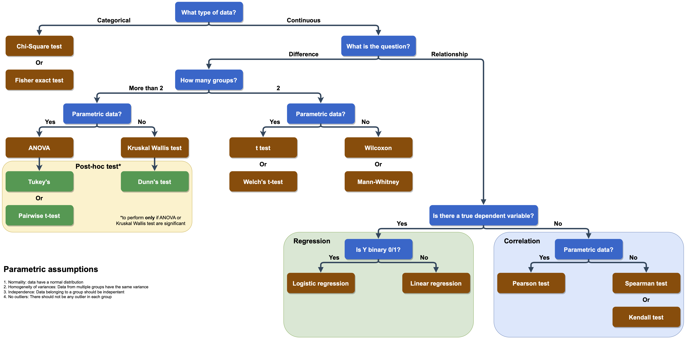
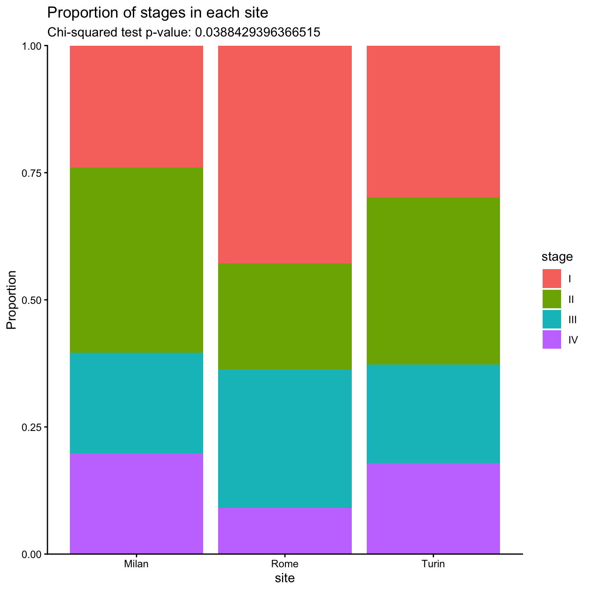
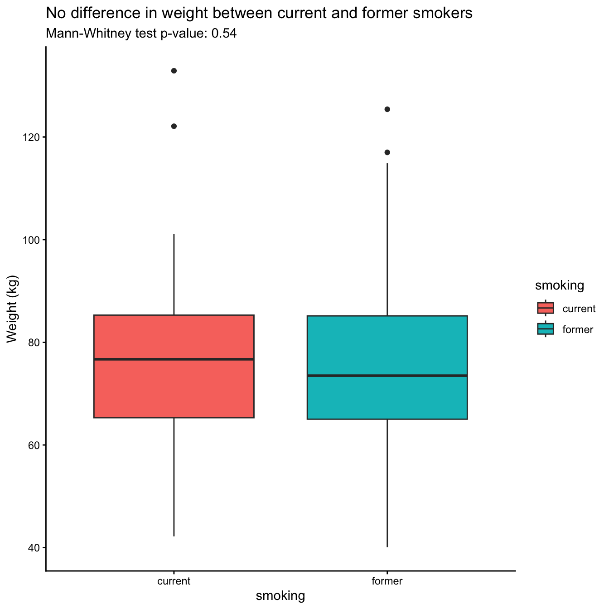
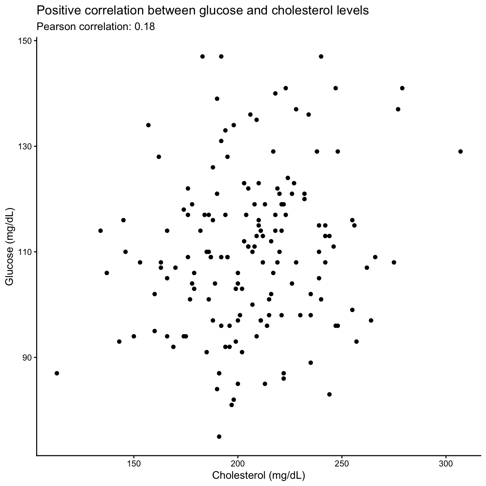
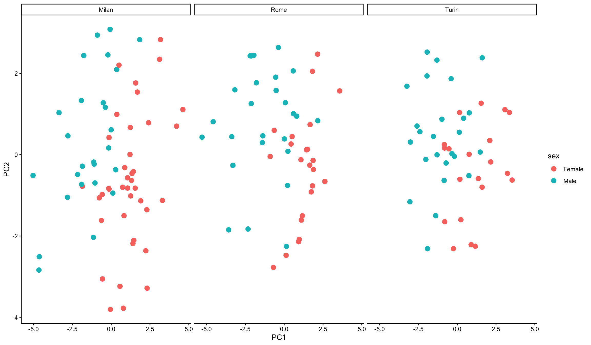
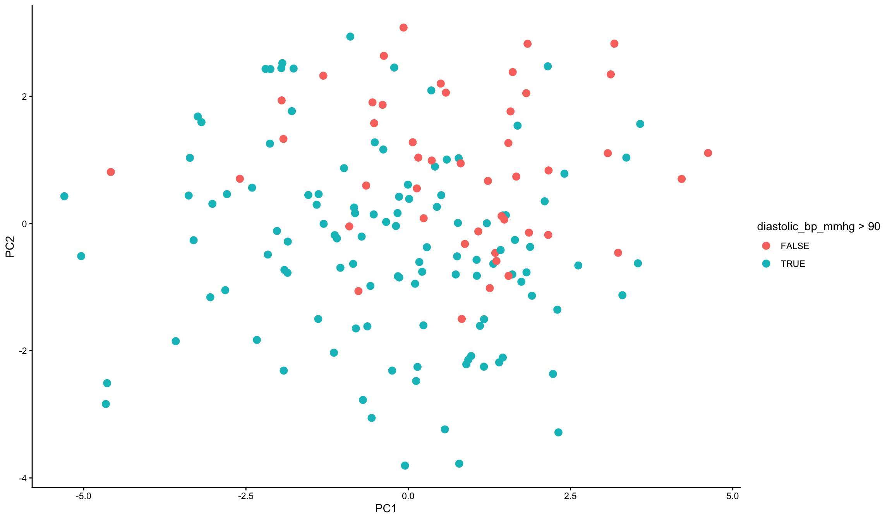
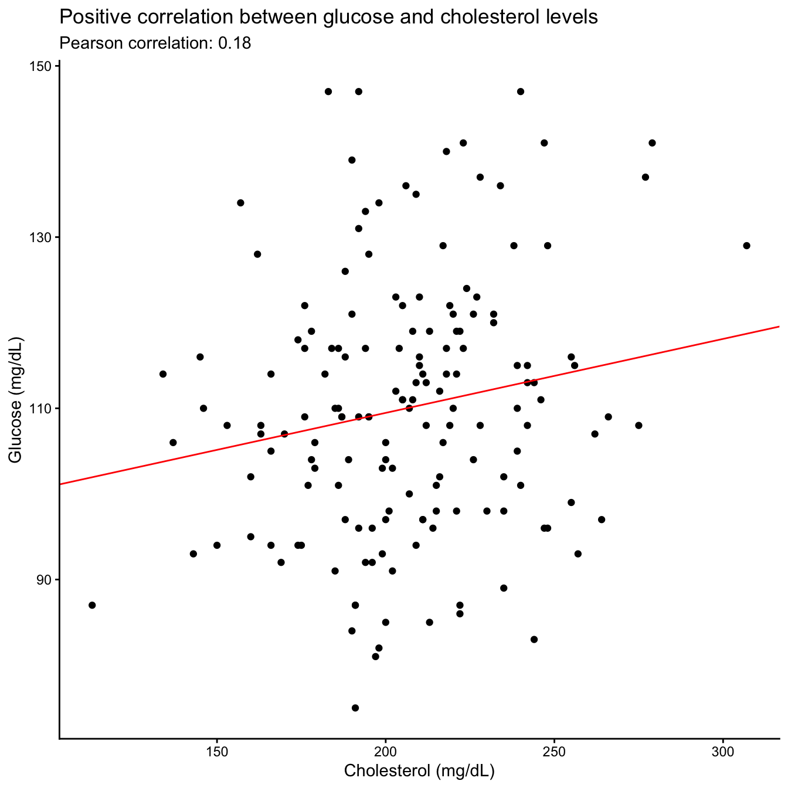

4 Statistics
First of all the choice of the right test is fundamental: here, you can see a scheme describing how to choose the right test depending on you design:

4.1 Categorical data
Measure the association between the different categories of categorical variables, so if the two variables are independent or not (e.g. smoking and lung cancer).
The two test we will see are the Chi-squared test and the Fisher exact test (only 2x2 contingency table and with low numerosity).
4.2 Contingency table
Contingency table is used to count the occurrence of the combination of the different levels of categorical variables. In R, to get a contingency table we use the function table.
We will load our patient data and see the correlation between stage and site, to see whether there is any difference in distribution.
df <- read.csv(file = "output/clinical_data_enriched.csv", header = T, stringsAsFactors = T)
summary(df) patient_id site visit_date visit_year visit_month visit_day age
PT-001 : 1 Milan:96 2020-07-21: 3 Min. :2018 Min. : 1.000 Min. : 1.00 Min. :26.0
PT-002 : 1 Rome :77 2025-03-20: 3 1st Qu.:2020 1st Qu.: 3.000 1st Qu.: 9.00 1st Qu.:49.0
PT-003 : 1 Turin:67 2018-03-03: 2 Median :2023 Median : 6.000 Median :16.00 Median :57.5
PT-004 : 1 2018-05-18: 2 Mean :2022 Mean : 5.754 Mean :16.23 Mean :57.3
PT-005 : 1 2018-07-18: 2 3rd Qu.:2025 3rd Qu.: 8.000 3rd Qu.:23.00 3rd Qu.:65.0
PT-006 : 1 2020-05-21: 2 Max. :2025 Max. :11.000 Max. :31.00 Max. :85.0
(Other):234 (Other) :226
sex smoking treatment stage weight_kg height_cm systolic_bp_mmhg
Female:118 current:63 Control:74 I :76 Min. : 39.40 Min. :148.9 Min. :115.0
Male :122 former :90 Drug_A :88 II :73 1st Qu.: 65.35 1st Qu.:162.2 1st Qu.:139.0
never :87 Drug_B :78 III:53 Median : 75.65 Median :168.5 Median :146.5
IV :38 Mean : 76.87 Mean :169.2 Mean :146.7
3rd Qu.: 87.83 3rd Qu.:174.8 3rd Qu.:153.2
Max. :132.90 Max. :200.1 Max. :192.0
diastolic_bp_mmhg glucose_mgdl cholesterol_mgdl crp_ngml height_m BMI
Min. : 73.00 Min. : 60.0 Min. :113.0 Min. : 1.92 Min. :1.489 Min. :16.00
1st Qu.: 90.75 1st Qu.: 98.0 1st Qu.:189.8 1st Qu.: 5.30 1st Qu.:1.623 1st Qu.:23.77
Median : 97.00 Median :109.0 Median :207.0 Median : 8.37 Median :1.685 Median :26.85
Mean : 96.11 Mean :108.8 Mean :207.9 Mean :10.35 Mean :1.692 Mean :26.71
3rd Qu.:102.00 3rd Qu.:118.0 3rd Qu.:226.0 3rd Qu.:13.02 3rd Qu.:1.748 3rd Qu.:29.80
Max. :120.00 Max. :149.0 Max. :307.0 Max. :42.09 Max. :2.001 Max. :40.70
BMI_class hemoglobin_gdl wbc_10e9l platelets_10e9l alt_ul creatinine_mgdl
Normal : 58 Min. : 9.20 Min. : 2.310 Min. : 60.0 Min. : 10.00 Min. :0.630
Obese : 13 1st Qu.:12.40 1st Qu.: 5.518 1st Qu.:191.8 1st Qu.: 32.75 1st Qu.:1.018
Overweight :102 Median :13.25 Median : 7.000 Median :232.0 Median : 46.50 Median :1.140
Underweight: 67 Mean :13.50 Mean : 6.758 Mean :231.7 Mean : 52.20 Mean :1.138
3rd Qu.:14.70 3rd Qu.: 7.902 3rd Qu.:271.0 3rd Qu.: 61.00 3rd Qu.:1.252
Max. :17.00 Max. :11.380 Max. :391.0 Max. :161.00 Max. :1.580
NA's :80 NA's :80 NA's :80 NA's :80 NA's :80 'data.frame': 240 obs. of 26 variables:
$ patient_id : Factor w/ 240 levels "PT-001","PT-002",..: 1 2 3 4 5 6 7 8 9 10 ...
$ site : Factor w/ 3 levels "Milan","Rome",..: 1 2 2 3 3 1 2 2 1 2 ...
$ visit_date : Factor w/ 218 levels "2018-01-14","2018-01-24",..: 129 75 150 52 104 108 80 214 57 146 ...
$ visit_year : int 2023 2020 2023 2020 2023 2023 2020 2025 2020 2023 ...
$ visit_month : int 7 8 10 3 3 4 9 10 4 9 ...
$ visit_day : int 20 15 15 6 30 15 9 7 19 27 ...
$ age : int 40 40 59 46 58 53 51 34 43 60 ...
$ sex : Factor w/ 2 levels "Female","Male": 2 2 1 2 2 1 2 1 2 2 ...
$ smoking : Factor w/ 3 levels "current","former",..: 3 1 2 1 2 1 2 3 3 2 ...
$ treatment : Factor w/ 3 levels "Control","Drug_A",..: 2 3 2 2 3 1 2 1 3 2 ...
$ stage : Factor w/ 4 levels "I","II","III",..: 2 1 1 1 3 4 1 1 3 2 ...
$ weight_kg : num 85.9 100.9 65 95.9 75.7 ...
$ height_cm : num 173 185 166 182 168 ...
$ systolic_bp_mmhg : int 164 143 152 142 160 150 137 146 151 159 ...
$ diastolic_bp_mmhg: int 101 102 98 88 96 107 96 106 94 104 ...
$ glucose_mgdl : int 113 105 110 120 131 78 108 93 106 110 ...
$ cholesterol_mgdl : int 172 239 146 232 192 232 163 199 200 185 ...
$ crp_ngml : num 5.89 6.13 7.81 3.35 21.72 ...
$ height_m : num 1.73 1.85 1.66 1.81 1.68 ...
$ BMI : num 28.8 29.4 23.7 29.1 26.8 22.9 24.2 29.8 24.8 26.9 ...
$ BMI_class : Factor w/ 4 levels "Normal","Obese",..: 3 3 4 3 3 4 4 3 4 3 ...
$ hemoglobin_gdl : num NA 15 11.8 16 15.4 NA 14 16.2 10.5 15.6 ...
$ wbc_10e9l : num NA 7.49 7.46 7.09 6.63 NA 6.99 9.26 4.79 5.65 ...
$ platelets_10e9l : int NA 270 252 233 192 NA 195 188 163 269 ...
$ alt_ul : int NA 56 27 20 16 NA 61 51 50 18 ...
$ creatinine_mgdl : num NA 1.58 1.09 1.17 1.06 NA 1.15 1.06 1.21 1.08 ...And now we can use table to get the contingency table:
I II III IV
Milan 23 35 19 19
Rome 33 16 21 7
Turin 20 22 13 12To make it clearer, we can add header to it:
stage
site I II III IV
Milan 23 35 19 19
Rome 33 16 21 7
Turin 20 22 13 124.3 Chi-squared test
To perform the chi-squared test, we use the chisq.test on the contingency table.
It is very useful to store the results of any statistical test into a variable:
Pearson's Chi-squared test
data: cont_table
X-squared = 13.277, df = 6, p-value = 0.03884Here, we can see that the association between the two variables is significant (this does not mean it is a causative association).
We can inspect the result object, if we want to then use the results (for example, print the p-value alone or insert it in a graph):
[1] "P-value of the Chi-squared test is: 0.0388429396366515"Let’s create a figure for this result.
ggplot(df) +
geom_bar(aes(x = site, fill = stage), position = "fill") +
scale_y_continuous(expand = expansion(0, 0)) +
labs(title = "Proportion of stages in each site",
subtitle = paste0("Chi-squared test p-value: ", chisq_res$p.value),
y = "Proportion") +
theme_classic()
4.3.1 Fisher’s Exact test
We can apply, just for example, the Fisher’s exact test on sex and 2 sites: Turin and Rome (remember, Fisher’s exact test wants a 2x2 table). The function to use is fisher.test:
filtered_df <- df |>
filter_out(site == "Milan")
cont_table_fisher <- table(filtered_df$sex, filtered_df$site)
fisher_res <- fisher.test(cont_table_fisher)
fisher_res
Fisher's Exact Test for Count Data
data: cont_table_fisher
p-value = 0.6199
alternative hypothesis: two.sidedWe can see that there is no significant correlation between those 2 sites and sex of the patients.
4.4 Comparing continuous variables
First thing to do is to check for parametric assumptions, which are:
Normality: data in each group must be normally distributed
Homoschedasticity: there must be equal variances between groups you are going to compare
Independency: data belonging to a group should be independent
No outliers: there should not be any outlier in any group.
For sake of time, today we will see only the shapiro-test for normality. You can see a full reference of the tests to perform here.
4.4.1 Shapiro-Wilk test
To test for normality of the data, we use the Shapiro-Wilk test on a single vector (so we need to repeat it for each group).
The function to use is shapiro.test, and here we apply just on diastolic_bp_mmhg in smokers.
smoker_patients_diastolic_bp_mmhg <- df %>%
filter(smoking == "current") %>%
pull(diastolic_bp_mmhg)
head(smoker_patients_diastolic_bp_mmhg)[1] 102 88 107 76 97 84
Shapiro-Wilk normality test
data: smoker_patients_diastolic_bp_mmhg
W = 0.98022, p-value = 0.4045Ok, this group of data has a normal distribution (p-value > 0.05). But how can we apply to all of type of smokers?
shap_df <- df %>%
group_by(smoking) %>%
summarise("shapiro_p-value" = shapiro.test(diastolic_bp_mmhg)$p.value,
"shapiro-W" = shapiro.test(diastolic_bp_mmhg)$statistic)
shap_df# A tibble: 3 × 3
smoking `shapiro_p-value` `shapiro-W`
<fct> <dbl> <dbl>
1 current 0.404 0.980
2 former 0.434 0.986
3 never 0.780 0.990And we can check which of them are not normal by filtering this dataframe:
# A tibble: 0 × 3
# ℹ 3 variables: smoking <fct>, shapiro_p-value <dbl>, shapiro-W <dbl>They are all normal, so we can use parametric tests to compare them.
4.4.2 Outlier detection
Outlier detection is a crucial point in the analyses, it helps to understand whether we have some wrong input data (very out of scale) and whether we can apply parametric or non parametric tests.
Exercise 4.1 Let’s say that an outlier is a value which is < 1st quartile (25th quantile) - 1.5 IQR or > 3rd quartile (75th quantile) + 1.5 IQR.
To help:
quantile(x, 0.25)finds the 25th quantile (1st quartile) of a vectors of values xIQR(x)finds the interquartile range of a vectors of values x- there are NAs…
Find, if there are, outliers in creatinine levels in both stage I and stage IV patients.
Solution
# Extract data
stageI_creatinine <- df %>%
filter(stage == "I") %>%
na.omit() %>%
pull(creatinine_mgdl)
stageIV_creatinine <- df %>%
filter(stage == "IV") %>%
na.omit() %>%
pull(creatinine_mgdl)
# Calculate outliers
stageI_outliers <- (stageI_creatinine < quantile(stageI_creatinine, 0.25) - 1.5 * IQR(stageI_creatinine)) | (stageI_creatinine > quantile(stageI_creatinine, 0.75) + 1.5 * IQR(stageI_creatinine))
stageIV_outliers <- (stageIV_creatinine < quantile(stageIV_creatinine, 0.25) - 1.5 * IQR(stageIV_creatinine)) | (stageIV_creatinine > quantile(stageIV_creatinine, 0.75) + 1.5 * IQR(stageIV_creatinine))
# Get outliers
print(mean(stageI_creatinine))[1] 1.138936[1] 1.58 0.66[1] 1.144numeric(0)4.4.3 T test
If we now want to compare diastolic_bp_mmhg between current smokers and patients who never smoke, we can apply standard t-test as both of them have normal distributions.
We can isolate the data from the dataframe:
'data.frame': 150 obs. of 26 variables:
$ patient_id : Factor w/ 240 levels "PT-001","PT-002",..: 1 2 4 6 8 9 11 12 13 15 ...
$ site : Factor w/ 3 levels "Milan","Rome",..: 1 2 3 1 2 1 1 2 1 3 ...
$ visit_date : Factor w/ 218 levels "2018-01-14","2018-01-24",..: 129 75 52 108 214 57 125 170 8 27 ...
$ visit_year : int 2023 2020 2020 2023 2025 2020 2023 2025 2018 2018 ...
$ visit_month : int 7 8 3 4 10 4 6 3 2 7 ...
$ visit_day : int 20 15 6 15 7 19 29 20 23 10 ...
$ age : int 40 40 46 53 34 43 65 52 58 75 ...
$ sex : Factor w/ 2 levels "Female","Male": 2 2 2 1 1 2 1 2 2 1 ...
$ smoking : Factor w/ 3 levels "current","former",..: 3 1 1 1 3 3 1 3 3 1 ...
$ treatment : Factor w/ 3 levels "Control","Drug_A",..: 2 3 2 1 1 3 1 2 2 1 ...
$ stage : Factor w/ 4 levels "I","II","III",..: 2 1 1 4 1 3 2 3 2 1 ...
$ weight_kg : num 85.9 100.9 95.9 69.6 75.3 ...
$ height_cm : num 173 185 182 174 159 ...
$ systolic_bp_mmhg : int 164 143 142 150 146 151 125 147 162 149 ...
$ diastolic_bp_mmhg: int 101 102 88 107 106 94 76 96 98 97 ...
$ glucose_mgdl : int 113 105 120 78 93 106 94 86 141 117 ...
$ cholesterol_mgdl : int 172 239 232 232 199 200 209 222 223 204 ...
$ crp_ngml : num 5.89 6.13 3.35 32.42 5.08 ...
$ height_m : num 1.73 1.85 1.81 1.74 1.59 ...
$ BMI : num 28.8 29.4 29.1 22.9 29.8 24.8 30.5 29.6 27 30.2 ...
$ BMI_class : Factor w/ 4 levels "Normal","Obese",..: 3 3 3 4 3 4 1 3 3 1 ...
$ hemoglobin_gdl : num NA 15 16 NA 16.2 10.5 12.4 14.5 13.5 12.7 ...
$ wbc_10e9l : num NA 7.49 7.09 NA 9.26 4.79 8.39 7.87 3.95 6.37 ...
$ platelets_10e9l : int NA 270 233 NA 188 163 165 263 193 288 ...
$ alt_ul : int NA 56 20 NA 51 50 47 51 95 36 ...
$ creatinine_mgdl : num NA 1.58 1.17 NA 1.06 1.21 1.12 1.03 1.27 1.18 ...We can now apply t-test, using t.test function:
Welch Two Sample t-test
data: t_test_df$diastolic_bp_mmhg by t_test_df$smoking
t = 2.0406, df = 114.58, p-value = 0.04359
alternative hypothesis: true difference in means between group current and group never is not equal to 0
95 percent confidence interval:
0.09540767 6.42238105
sample estimates:
mean in group current mean in group never
98.06349 94.80460 Also for this object, we can have access to each individual result:
[1] 0.04358633mean in group current mean in group never
98.06349 94.80460 4.4.4 Mann-Whitney
Let’s pretend that the distribution of diastolic_bp_mmhg in former smokers is not normal; if we want to perform a comparison between former and current, we cannot use standard t.test, but the Mann-Whitney test. The function to use is wilcox.test.
mann_df <- df %>%
filter_out(smoking == "never")
wilcox_res <- wilcox.test(mann_df$diastolic_bp_mmhg ~ mann_df$smoking)
wilcox_res
Wilcoxon rank sum test with continuity correction
data: mann_df$diastolic_bp_mmhg by mann_df$smoking
W = 3267.5, p-value = 0.1089
alternative hypothesis: true location shift is not equal to 0We can see that there is no significant difference.
Exercise 4.2 Is there a significant difference in weight between current smokers and former smokers? Choose the right test and plot the results.
Solution
smoking_df <- df |>
filter_out(smoking == "never")
smoking_df |>
group_by(smoking) |>
summarise("shapiro_p-value" = shapiro.test(weight_kg)$p.value,
"shapiro-W" = shapiro.test(weight_kg)$statistic)# A tibble: 2 × 3
smoking `shapiro_p-value` `shapiro-W`
<fct> <dbl> <dbl>
1 current 0.0773 0.966
2 former 0.0430 0.971
Wilcoxon rank sum test with continuity correction
data: smoking_df$weight_kg by smoking_df$smoking
W = 3001.5, p-value = 0.5383
alternative hypothesis: true location shift is not equal to 0ggplot(smoking_df) +
geom_boxplot(aes(x = smoking, y = weight_kg, fill = smoking)) +
labs(y = "Weight (kg)",
title = "No difference in weight between current and former smokers",
subtitle = paste0("Mann-Whitney test p-value: ", round(wilcox_res$p.value, 2))) +
theme_classic()
4.4.5 ANOVA
When the groups are more than 2, we should first do the ANOVA and then, only if it is significant perform pairwise comparisons.
Let’s check whether systolic_bp_mmhg is different between males and females and based on BMI class.
Df Sum Sq Mean Sq F value Pr(>F)
df$BMI_class 3 1412 470.7 3.624 0.01378 *
df$sex 1 1151 1150.8 8.862 0.00322 **
df$BMI_class:df$sex 3 496 165.4 1.274 0.28396
Residuals 232 30126 129.9
---
Signif. codes: 0 '***' 0.001 '**' 0.01 '*' 0.05 '.' 0.1 ' ' 1So, both sex and BMI class influence systolic_bp_mmhg; but not the interaction. To get which BMI_class are different we perform the pairwise t test:
Pairwise comparisons using t tests with pooled SD
data: df$systolic_bp_mmhg and df$BMI_class
Normal Obese Overweight
Obese 0.022 - -
Overweight 0.589 0.204 -
Underweight 0.165 0.590 1.000
P value adjustment method: bonferroni The only BMI class comparison in which the systolic_bp_mmhg is different is Obese vs Normal.
4.4.6 Pearson correlation test
To perform a correlation test between continuous variables, we use cor.test with method “pearson” (if variables are normally distributed, otherwise “spearman” or “kendall”).
REMEMBER: correlation is not causation.
Let’s pretend all variable are normally distributed and see the correlation between wbc_10e9l and crp_ngml:
Pearson's product-moment correlation
data: df$wbc_10e9l and df$crp_ngml
t = 1.383, df = 158, p-value = 0.1686
alternative hypothesis: true correlation is not equal to 0
95 percent confidence interval:
-0.04658334 0.26011079
sample estimates:
cor
0.1093659 There is not a significant correlation.
Exercise 4.3 Is there a significant correlation between glucose_mgdl and cholesterol_mgdl in patients?
Plot the result.
Solution
corr_df <- na.omit(df)
corr_res <- cor.test(corr_df$glucose_mgdl, corr_df$cholesterol_mgdl, method = "pearson")
corr_res
Pearson's product-moment correlation
data: corr_df$glucose_mgdl and corr_df$cholesterol_mgdl
t = 2.281, df = 158, p-value = 0.02388
alternative hypothesis: true correlation is not equal to 0
95 percent confidence interval:
0.02406027 0.32471529
sample estimates:
cor
0.1785525 corr_plot <- ggplot(corr_df) +
geom_point(aes(y = glucose_mgdl, x = cholesterol_mgdl)) +
labs(y = "Glucose (mg/dL)",
x = "Cholesterol (mg/dL)",
title = "Positive correlation between glucose and cholesterol levels",
subtitle = paste0("Pearson correlation: ", round(corr_res$estimate, 2))) +
theme_classic()
corr_plot
4.5 PCA
PCA (Principal Component Analysis) is useful to evaluate whether data can be clustered in groups based on any factor that we have (age, sex, stage, …).
To perform PCA, we should ouse only numeric scaled data. Se we first have to select only numeric variables and scale them.
'data.frame': 160 obs. of 18 variables:
$ visit_year : int 2020 2023 2020 2023 2020 2025 2020 2023 2023 2025 ...
$ visit_month : int 8 10 3 3 9 10 4 9 6 3 ...
$ visit_day : int 15 15 6 30 9 7 19 27 29 20 ...
$ age : int 40 59 46 58 51 34 43 60 65 52 ...
$ weight_kg : num 100.9 65 95.9 75.7 69.7 ...
$ height_cm : num 185 166 182 168 170 ...
$ systolic_bp_mmhg : int 143 152 142 160 137 146 151 159 125 147 ...
$ diastolic_bp_mmhg: int 102 98 88 96 96 106 94 104 76 96 ...
$ glucose_mgdl : int 105 110 120 131 108 93 106 110 94 86 ...
$ cholesterol_mgdl : int 239 146 232 192 163 199 200 185 209 222 ...
$ crp_ngml : num 6.13 7.81 3.35 21.72 5.41 ...
$ height_m : num 1.85 1.66 1.81 1.68 1.7 ...
$ BMI : num 29.4 23.7 29.1 26.8 24.2 29.8 24.8 26.9 30.5 29.6 ...
$ hemoglobin_gdl : num 15 11.8 16 15.4 14 16.2 10.5 15.6 12.4 14.5 ...
$ wbc_10e9l : num 7.49 7.46 7.09 6.63 6.99 9.26 4.79 5.65 8.39 7.87 ...
$ platelets_10e9l : int 270 252 233 192 195 188 163 269 165 263 ...
$ alt_ul : int 56 27 20 16 61 51 50 18 47 51 ...
$ creatinine_mgdl : num 1.58 1.09 1.17 1.06 1.15 1.06 1.21 1.08 1.12 1.03 ...
- attr(*, "na.action")= 'omit' Named int [1:80] 1 6 14 21 25 33 46 49 52 54 ...
..- attr(*, "names")= chr [1:80] "1" "6" "14" "21" ...We have to get rid of visit year, month and day, as they should not be considered numeric in this case, rather factors.
'data.frame': 160 obs. of 15 variables:
$ age : int 40 59 46 58 51 34 43 60 65 52 ...
$ weight_kg : num 100.9 65 95.9 75.7 69.7 ...
$ height_cm : num 185 166 182 168 170 ...
$ systolic_bp_mmhg : int 143 152 142 160 137 146 151 159 125 147 ...
$ diastolic_bp_mmhg: int 102 98 88 96 96 106 94 104 76 96 ...
$ glucose_mgdl : int 105 110 120 131 108 93 106 110 94 86 ...
$ cholesterol_mgdl : int 239 146 232 192 163 199 200 185 209 222 ...
$ crp_ngml : num 6.13 7.81 3.35 21.72 5.41 ...
$ height_m : num 1.85 1.66 1.81 1.68 1.7 ...
$ BMI : num 29.4 23.7 29.1 26.8 24.2 29.8 24.8 26.9 30.5 29.6 ...
$ hemoglobin_gdl : num 15 11.8 16 15.4 14 16.2 10.5 15.6 12.4 14.5 ...
$ wbc_10e9l : num 7.49 7.46 7.09 6.63 6.99 9.26 4.79 5.65 8.39 7.87 ...
$ platelets_10e9l : int 270 252 233 192 195 188 163 269 165 263 ...
$ alt_ul : int 56 27 20 16 61 51 50 18 47 51 ...
$ creatinine_mgdl : num 1.58 1.09 1.17 1.06 1.15 1.06 1.21 1.08 1.12 1.03 ...
- attr(*, "na.action")= 'omit' Named int [1:80] 1 6 14 21 25 33 46 49 52 54 ...
..- attr(*, "names")= chr [1:80] "1" "6" "14" "21" ...Now we have to scale data:
To confirm that they have been scaled:
age weight_kg height_cm systolic_bp_mmhg diastolic_bp_mmhg glucose_mgdl
-1.307256e-16 -3.620592e-16 1.146123e-15 -4.966372e-16 2.995596e-16 1.127231e-18
cholesterol_mgdl crp_ngml height_m BMI hemoglobin_gdl wbc_10e9l
-3.578572e-16 -3.238851e-17 4.793675e-16 -1.910446e-16 -2.797160e-16 1.546709e-16
platelets_10e9l alt_ul creatinine_mgdl
-1.187201e-18 -1.036389e-16 6.266217e-16 age weight_kg height_cm systolic_bp_mmhg diastolic_bp_mmhg glucose_mgdl
1 1 1 1 1 1
cholesterol_mgdl crp_ngml height_m BMI hemoglobin_gdl wbc_10e9l
1 1 1 1 1 1
platelets_10e9l alt_ul creatinine_mgdl
1 1 1 To perform PCA, we use prcomp function:
Standard deviations (1, .., p=15):
[1] 1.912258e+00 1.513155e+00 1.198225e+00 1.148116e+00 1.015913e+00 9.597070e-01 9.321631e-01 9.017047e-01
[9] 8.814928e-01 8.032314e-01 7.133833e-01 6.701814e-01 5.296499e-01 6.166601e-02 9.127822e-16
Rotation (n x k) = (15 x 15):
PC1 PC2 PC3 PC4 PC5 PC6 PC7
age 0.008330314 -0.434005567 -0.05421122 0.235479055 0.236338866 -0.41999664 0.101996500
weight_kg -0.477734288 0.011178321 -0.09567052 -0.210115072 0.024747252 0.05574043 0.032095684
height_cm -0.365304360 0.390722311 0.02010322 0.220378230 0.175233679 0.03255715 -0.033106657
systolic_bp_mmhg -0.223192721 -0.348380634 0.31736070 0.349042281 -0.162631293 0.17911526 0.076744860
diastolic_bp_mmhg -0.164838721 -0.333543008 0.40895939 0.339825013 -0.115842387 0.24927132 0.006192917
glucose_mgdl -0.241516653 -0.216418273 -0.24080333 0.007671028 0.054530234 -0.21732486 0.485915233
cholesterol_mgdl -0.104945115 -0.274894361 -0.37944086 0.081850470 0.130655961 -0.18578891 -0.405818323
crp_ngml -0.129743208 0.021505087 0.44081292 -0.429896917 0.235883262 -0.05194062 0.395750869
height_m -0.365304360 0.390722311 0.02010322 0.220378230 0.175233679 0.03255715 -0.033106657
BMI -0.364370368 -0.216549105 -0.13560650 -0.397096477 -0.092001580 0.04070725 0.063909718
hemoglobin_gdl -0.297504455 0.137908795 -0.13646690 0.196583824 -0.437602610 0.01001426 -0.056650636
wbc_10e9l 0.008459241 0.128814723 0.29511743 -0.126508471 -0.619699305 -0.58149117 -0.074295609
platelets_10e9l 0.082793288 -0.008592387 -0.44038790 0.037973578 -0.411932917 0.29664230 0.441613574
alt_ul -0.117603922 -0.256685107 0.04630145 -0.398935550 -0.113292712 0.34739457 -0.430660345
creatinine_mgdl -0.315611319 -0.047259459 -0.05162191 -0.038211446 -0.007243073 -0.30189898 -0.172397833
PC8 PC9 PC10 PC11 PC12 PC13 PC14
age -0.09669130 0.29086350 0.16163362 -0.24928742 0.5340819816 -0.207365391 -0.0077207637
weight_kg 0.13246964 -0.14563527 -0.13771123 -0.25816540 0.1098718353 -0.132978903 0.7479755644
height_cm 0.11449815 0.08663982 0.25249113 -0.10825117 0.0101489045 -0.041847706 -0.1847014652
systolic_bp_mmhg 0.05053639 -0.11228380 0.01017092 -0.23922452 0.0182918726 0.684845129 -0.0024058682
diastolic_bp_mmhg 0.17171252 0.06245884 -0.09863487 0.21772001 -0.2343978658 -0.598159203 -0.0007140495
glucose_mgdl -0.30724573 -0.30610735 0.39160327 0.18757599 -0.4163160098 -0.022466399 0.0026863190
cholesterol_mgdl 0.58257658 -0.09940667 0.08709701 0.40086145 -0.0380195920 0.165651557 0.0053727625
crp_ngml 0.22832212 0.23695996 0.04359699 0.44822308 0.2115814342 0.181013559 0.0010498380
height_m 0.11449815 0.08663982 0.25249113 -0.10825117 0.0101489045 -0.041847706 -0.1847014652
BMI 0.10919816 -0.22676613 -0.31900769 -0.24816854 0.1140144723 -0.135712304 -0.6098707954
hemoglobin_gdl -0.35956963 -0.06861943 -0.12366052 0.50814131 0.4822604936 0.017783375 -0.0028866137
wbc_10e9l 0.24023399 -0.06313973 0.24612723 -0.14285067 -0.0690764039 -0.070497229 0.0114953445
platelets_10e9l 0.32569607 0.47072619 0.10829681 -0.07365816 0.0003121005 0.008273408 0.0098323540
alt_ul -0.24955969 0.21554525 0.57431722 -0.01800349 0.0274637770 -0.018342739 -0.0026862862
creatinine_mgdl -0.24825899 0.61218679 -0.36814365 0.02023977 -0.4202024057 0.155520201 0.0036667895
PC15
age 3.712802e-16
weight_kg 2.524768e-16
height_cm -7.071068e-01
systolic_bp_mmhg 1.126616e-18
diastolic_bp_mmhg -6.330386e-17
glucose_mgdl -9.027537e-17
cholesterol_mgdl -2.792104e-16
crp_ngml -4.024681e-18
height_m 7.071068e-01
BMI 2.154088e-16
hemoglobin_gdl 3.022242e-17
wbc_10e9l -3.120194e-17
platelets_10e9l 1.924663e-16
alt_ul -4.819710e-16
creatinine_mgdl -5.456474e-18We can now create another df in which we have all the info about our patients + the coordinate of the PCs, so that we can plot the data.
patient_id site visit_date visit_year visit_month visit_day age sex smoking treatment stage weight_kg
2 PT-002 Rome 2020-08-15 2020 8 15 40 Male current Drug_B I 100.9
3 PT-003 Rome 2023-10-15 2023 10 15 59 Female former Drug_A I 65.0
4 PT-004 Turin 2020-03-06 2020 3 6 46 Male current Drug_A I 95.9
5 PT-005 Turin 2023-03-30 2023 3 30 58 Male former Drug_B III 75.7
7 PT-007 Rome 2020-09-09 2020 9 9 51 Male former Drug_A I 69.7
8 PT-008 Rome 2025-10-07 2025 10 7 34 Female never Control I 75.3
height_cm systolic_bp_mmhg diastolic_bp_mmhg glucose_mgdl cholesterol_mgdl crp_ngml height_m BMI BMI_class
2 185.3 143 102 105 239 6.13 1.853 29.4 Overweight
3 165.6 152 98 110 146 7.81 1.656 23.7 Underweight
4 181.5 142 88 120 232 3.35 1.815 29.1 Overweight
5 168.1 160 96 131 192 21.72 1.681 26.8 Overweight
7 169.7 137 96 108 163 5.41 1.697 24.2 Underweight
8 159.0 146 106 93 199 5.08 1.590 29.8 Overweight
hemoglobin_gdl wbc_10e9l platelets_10e9l alt_ul creatinine_mgdl PC1 PC2 PC3 PC4
2 15.0 7.49 270 56 1.58 -3.1848752 1.5940551 -0.8330956 0.42893639
3 11.8 7.46 252 27 1.09 1.5043769 0.1310580 1.0588467 0.72295656
4 16.0 7.09 233 20 1.17 -1.9499679 1.9368075 -1.6129773 0.82280702
5 15.4 6.63 192 16 1.06 -0.7172053 -0.2052340 0.9639881 0.60533057
7 14.0 6.99 195 61 1.15 0.5943474 1.0061787 0.4715918 0.02971275
8 16.2 9.26 188 51 1.06 0.4423734 0.2620532 1.0162111 -0.34260605
PC5 PC6 PC7 PC8 PC9 PC10 PC11 PC12 PC13
2 -0.7556020 0.15162987 -1.3256103 0.7741280 1.30447738 -0.64066623 0.2798982 -1.41411138 -0.20183004
3 -0.2805843 -0.02007899 1.3199058 -0.5254682 0.16217081 -0.24345315 -1.2285633 -0.53511971 -0.08353174
4 -0.3562495 -0.49865886 -0.1358980 0.2480322 -1.07321376 -0.30823140 0.3172393 -0.01790244 0.15939163
5 0.1025643 -0.62852241 1.8563071 -0.5588202 -1.09376445 -0.29296465 1.1500676 0.54120182 0.93463483
7 -0.2755777 0.20823014 -0.3861093 -1.3948701 -0.03683629 0.06404422 -0.1240594 -0.31877450 -0.68253066
8 -2.5520409 0.60211481 -1.2551166 -0.1767724 -1.47110004 -1.50399528 1.0036042 -0.11140713 -0.48527809
PC14 PC15
2 0.077333696 -2.722210e-15
3 0.008189665 2.880921e-16
4 0.036984617 -1.381056e-15
5 -0.026541502 1.010757e-15
7 -0.025616541 5.606148e-16
8 -0.024698988 1.271017e-16ggplot(pc_data_df) +
geom_point(aes(x = PC1, y = PC2, color = sex), size = 3) +
facet_wrap(~ site) +
theme_classic()
ggplot(pc_data_df) +
geom_point(aes(x = PC1, y = PC2, color = diastolic_bp_mmhg > 90), size = 3) +
theme_classic()
4.6 Linear models
Lastly, let’s see linear models, that determine which features are important in predicting or influencing an outcome feature (e.g. BMI/age and diabetes).
4.6.1 Linear model with continuous outcome
If the outcome is continuous, we can use lm function.
Let’s see if we can create a model that predicts glucose levels starting from all the others variables:
lm_data <- df |>
na.omit() |>
dplyr::select(-starts_with("visit_"), - "patient_id")
lm_res <- lm(glucose_mgdl ~ ., data = lm_data)
summary(lm_res)
Call:
lm(formula = glucose_mgdl ~ ., data = lm_data)
Residuals:
Min 1Q Median 3Q Max
-30.315 -6.941 -0.241 6.351 33.009
Coefficients: (1 not defined because of singularities)
Estimate Std. Error t value Pr(>|t|)
(Intercept) 111.128909 130.213184 0.853 0.394951
siteRome -4.343176 2.797351 -1.553 0.122894
siteTurin -2.870328 2.862795 -1.003 0.317859
age 0.466927 0.123516 3.780 0.000236 ***
sexMale 4.224451 3.702029 1.141 0.255871
smokingformer -6.108882 3.248254 -1.881 0.062204 .
smokingnever 1.023849 3.222333 0.318 0.751184
treatmentDrug_A 2.273550 2.766178 0.822 0.412599
treatmentDrug_B 3.304591 2.991571 1.105 0.271313
stageII -3.407747 2.874672 -1.185 0.237958
stageIII -2.920170 3.417514 -0.854 0.394380
stageIV -9.152404 4.229189 -2.164 0.032243 *
weight_kg 0.466022 0.759459 0.614 0.540512
height_cm -0.448431 0.742911 -0.604 0.547129
systolic_bp_mmhg 0.077726 0.134848 0.576 0.565323
diastolic_bp_mmhg -0.127067 0.158403 -0.802 0.423882
cholesterol_mgdl -0.008258 0.040264 -0.205 0.837802
crp_ngml 0.061043 0.206082 0.296 0.767535
height_m NA NA NA NA
BMI 0.290750 2.305197 0.126 0.899821
BMI_classObese 6.946945 11.355943 0.612 0.541751
BMI_classOverweight 4.870855 4.463734 1.091 0.277155
BMI_classUnderweight 11.372951 7.377695 1.542 0.125563
hemoglobin_gdl 0.577618 0.953527 0.606 0.545700
wbc_10e9l -0.808985 0.620294 -1.304 0.194419
platelets_10e9l 0.013806 0.020099 0.687 0.493357
alt_ul -0.004121 0.044427 -0.093 0.926234
creatinine_mgdl -0.973014 7.784103 -0.125 0.900712
---
Signif. codes: 0 '***' 0.001 '**' 0.01 '*' 0.05 '.' 0.1 ' ' 1
Residual standard error: 13.24 on 133 degrees of freedom
Multiple R-squared: 0.3527, Adjusted R-squared: 0.2261
F-statistic: 2.787 on 26 and 133 DF, p-value: 7.005e-05From this we can see that age is significantly associated with the outcome (every year results in a predicted increase of 0.466927), as well as being of stage IV (compared to stage I, -9.152404).
We can also use the same function to create a simple linear model that returns us intercept and slope of the line that correlates glucose_mgdl and cholesterol_mgdl in stage III patients (remember [#correlation]?):
Call:
lm(formula = glucose_mgdl ~ cholesterol_mgdl, data = corr_df)
Residuals:
Min 1Q Median 3Q Max
-33.691 -11.546 0.438 8.858 39.000
Coefficients:
Estimate Std. Error t value Pr(>|t|)
(Intercept) 92.18423 7.89821 11.672 <2e-16 ***
cholesterol_mgdl 0.08642 0.03789 2.281 0.0239 *
---
Signif. codes: 0 '***' 0.001 '**' 0.01 '*' 0.05 '.' 0.1 ' ' 1
Residual standard error: 14.85 on 158 degrees of freedom
Multiple R-squared: 0.03188, Adjusted R-squared: 0.02575
F-statistic: 5.203 on 1 and 158 DF, p-value: 0.02388We got the same results, but we also have Intercept and Estimate, that we can use to plot a line in corr_plot:
corr_plot +
geom_abline(aes(slope = gl_chol_lm$coefficients["cholesterol_mgdl"],
intercept = gl_chol_lm$coefficients["(Intercept)"]),
color = "red")
4.6.2 Generalized linear model with dicotomic outcome
We can also do the other way round (which is more meaningful for us): check which predictors are associated with diabetes, using a generalized linear model:
library(MASS)
df_poli <- lm_data |>
dplyr::select(-height_m, -BMI_class, -weight_kg, -height_cm, -site, -treatment)
polr_res <- polr(stage ~ ., data = df_poli, method = "logistic")
summary(polr_res)
Re-fitting to get HessianCall:
polr(formula = stage ~ ., data = df_poli, method = "logistic")
Coefficients:
Value Std. Error t value
age 0.0232525 0.017088 1.36076
sexMale 0.4197909 0.446624 0.93992
smokingformer 0.2306958 0.449945 0.51272
smokingnever 0.7644046 0.466764 1.63767
systolic_bp_mmhg -0.0068315 0.019111 -0.35746
diastolic_bp_mmhg 0.0132073 0.022251 0.59355
glucose_mgdl -0.0237946 0.011726 -2.02925
cholesterol_mgdl 0.0032712 0.005369 0.60928
crp_ngml 0.1707731 0.029469 5.79491
BMI -0.1134834 0.040660 -2.79106
hemoglobin_gdl -0.2752424 0.129483 -2.12571
wbc_10e9l 0.0151978 0.086915 0.17486
platelets_10e9l 0.0001578 0.002627 0.06005
alt_ul 0.0084260 0.006276 1.34248
creatinine_mgdl 0.9294965 1.049239 0.88588
Intercepts:
Value Std. Error t value
I|II -4.4825 3.0120 -1.4882
II|III -2.6685 3.0035 -0.8885
III|IV -0.8728 2.9869 -0.2922
Residual Deviance: 361.4394
AIC: 397.4394 Important predictors are the ones with t value > 2 or < -2.
Higher levels of CRP are strongly associated with increased odds of being in a more advanced stage; conversely, higher BMI, hemoglobin, and glucose levels are associated with lower odds of advanced stage.